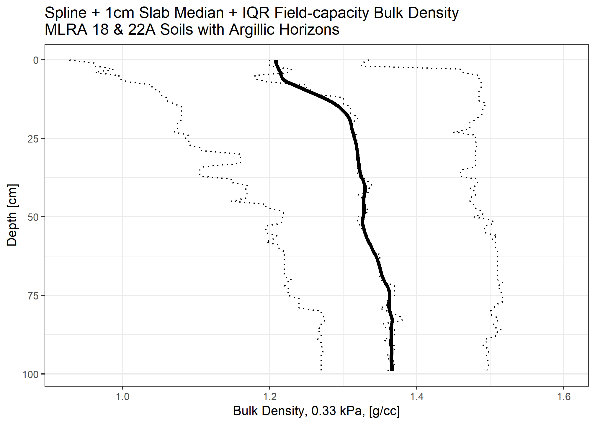
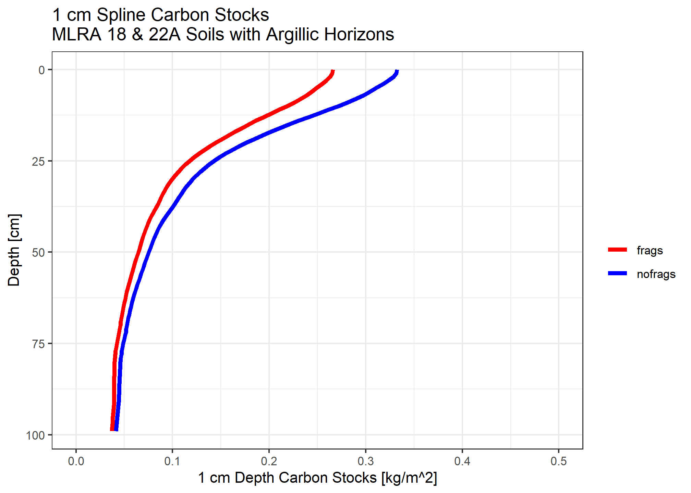

library(aqp)
library(soilDB)
library(ggplot2)
library(magrittr)
# get 18 and 22A MLRA overlap KSSL pedon data
if (!file.exists("kssl1822a.rda")) {
kssl <- fetchKSSL(mlra = c("18","22A"),
returnMorphologicData = TRUE,
returnGeochemicalData = TRUE,
simplifyColors = TRUE,
progress = FALSE)
save(kssl, file = "kssl1822a.rda")
} else {
load("kssl1822a.rda")
}# identify soils with argillic horizon
argi <- profileApply(kssl$SPC, function(p) data.frame(id=profile_id(p), t(getArgillicBounds(p))),
frameify = TRUE, column.names = c("pedon_key", "argi_top","argi_bot"))
argisub <- subset(kssl$SPC, profile_id(kssl$SPC) %in% argi$pedon_key[complete.cases(argi)])# filter for valid geometry
argisub <- subset(argisub, !checkHzDepthLogic(argisub)$overlapOrGap)
hzidname(argisub) <- "labsampnum"
length(argisub)## [1] 384# truncate to [MSS,100]
argisub <- glomApply(argisub,
function(p) return(c(getMineralSoilSurfaceDepth(p), 100)),
truncate = TRUE)## OC slab
##
dataslab <- slab(argisub, ~ oc + clay + db_od + frags)
ocslab <- subset(dataslab, variable == "oc")
depths(ocslab) <- all.profiles ~ top + bottom
hzdesgnname(ocslab) <- "hzID"
## Db slab
##
dbslab <- subset(dataslab, variable == "db_od")
depths(dbslab) <- all.profiles ~ top + bottom
hzdesgnname(dbslab) <- "hzID"
## Coarse frag slab
##
fragslab <- subset(dataslab, variable == "frags")
depths(fragslab) <- all.profiles ~ top + bottom
hzdesgnname(fragslab) <- "hzID"
## clay slab
##
clayslab <- subset(dataslab, variable == "clay")
depths(clayslab) <- all.profiles ~ top + bottom
hzdesgnname(clayslab) <- "hzID"
# using default mpspline2 lambda
clayspline <- spc2mpspline(clayslab, "p.q50", lam = 0.1)
ocspline <- spc2mpspline(ocslab, "p.q50", lam = 0.1)
dbspline <- spc2mpspline(dbslab, "p.q50", lam = 0.1)
fragspline <- spc2mpspline(fragslab, "p.q50", lam = 0.1)
# TODO: generalize
# combine/rename splines and original data
ocspline$spline_q50_oc <- ocspline$p.q50_spline
ocspline$spline_q50_db13 <- dbspline$p.q50_spline
ocspline$spline_q50_clay <- clayspline$p.q50_spline
ocspline$spline_q50_frags <- fragspline$p.q50_spline
ocspline$p.q25 <- ocslab$p.q25
ocspline$p.q75 <- ocslab$p.q75
ocspline$q50_db13 <- dbslab$p.q50
ocspline$q50_clay <- clayslab$p.q50
ocspline$q50_frags <- fragslab$p.q50
ocspline$q25_db13 <- dbslab$p.q25
ocspline$q25_clay <- clayslab$p.q25
ocspline$q25_frags <- fragslab$p.q25
ocspline$q75_db13 <- dbslab$p.q75
ocspline$q75_clay <- clayslab$p.q75
ocspline$q75_frags <- fragslab$p.q75
Carbon stock is the organic carbon content multiplied by bulk density in \(kg/m^3\) multiplied by layer thickness (\(m\))
When accounting for fragments, we assume the median rock fragment volume does not store carbon.
medianstock <- (ocspline$p.q50_spline / 100) * (( ocspline$spline_q50_db13 * 1e6) / 1000) * (1 / 100)
medianstock_withfrags <- medianstock * (1 - (ocspline$spline_q50_frags / 100))
Compare to \(12 kg/m^2\) over \([MSS, 100]\) for taxonomic evaluation.
sum(medianstock) ## [1] 12.37836sum(medianstock_withfrags) ## [1] 10.25331The median spline soil with an argillic horizon just barely makes the carbon requirement for Humults near 90cm depth. When we account for rock fragments not having the same bulk characteristics as soil material, we find the threshold is not met. This is consistent with expectation about prevalence of Humults.
Soils in these landscapes may have a bedrock contact within 100cm, or may have more than the average amount of fragments. Those factors alone likely preclude the \(12 kg/m^2\) criterion in many cases. Further, here are no parallel criteria in the Alfisols, Mollisols or Inceptisols, so this is the not the only thing determining whether you are a Humult (base saturation, carbon in upper argillic), per se.
That said, many vegetative communities of the higher elevation portions of MLRA 18 and warmer portions of MLRA 22A are very productive and have high potential to store carbon in the soil profile. A single spline to represent all of the conditions that affect carbon accumulation in these soils for two MLRAs is naive, but this demo shows how one can systematically build such a thing for a target area/soil type. Perhaps this broad analysis could be used to further focus on the common soil forming factors that lead to high carbon stocks in the upper meter.
A relatively large number of profiles have complete organic carbon data within the estimated soil depth.
table(floor(evalMissingData(argisub, "oc", name = "hzn_desgn")))##
## 0 1
## 157 227Fewer profiles have complete bulk density 0.33 kPa across same depth.
table(floor(evalMissingData(argisub, "db_13b", name = "hzn_desgn")))##
## 0 1
## 346 38Take median of known 0.33 kPa bulk densities for horizon designations starting with A, B, or C.
Then assign sequentially to layers missing bulk density whose designations contain A, B or C, respectively.
nadb.idx <- is.na(argisub$db_13b)
hzd <- argisub$hzn_desgn
dbin <- argisub$db_13b
# fill in missing bulk density with median based on horizon designation
argisub$db_13b[grepl("A", hzd) & nadb.idx] <- median(dbin[grepl("^A", hzd)], na.rm = TRUE) # 1.19 g/cc
argisub$db_13b[grepl("B", hzd) & nadb.idx] <- median(dbin[grepl("^B", hzd)], na.rm = TRUE) # 1.35 g/cc
argisub$db_13b[grepl("C", hzd) & nadb.idx] <- median(dbin[grepl("^C", hzd)], na.rm = TRUE) # 1.51 g/cc
# treat missing (NA) frags as zero
argisub$frags[is.na(argisub$frags)] <- 0Keep the ones with full organic carbon data in 0 - 100 cm interval.
argisub <- subset(argisub, as.logical(floor(evalMissingData(trunc(argisub, 0, 100), "oc", name = "hzn_desgn"))))Carbon stock is the organic carbon content multiplied by bulk density in \(kg/m^3\) multiplied by layer thickness (\(m\))
We use the visual estimates of rock fragment volume by layer to account for fragments, assuming they do not store carbon. Treating missing NA fragments as zero.
res <- argisub %>%
trunc(0, 100) %>%
mutate(thk = hzn_bot - hzn_top) %>%
mutate_profile(c_stock_partial = (oc / 100) * ((db_13b * 1e6) / 1000) * (thk / 100),
c_stock_pfrags = c_stock_partial * (1 - frags / 100),
cml_stock = cumsum(ifelse(is.na(c_stock_partial), 0, c_stock_partial)),
cml_stock_frags = cumsum(ifelse(is.na(c_stock_pfrags), 0, c_stock_pfrags)),
c_stock = sum(c_stock_partial, na.rm = TRUE),
c_stock_frags = sum(c_stock_pfrags, na.rm = TRUE))## 0% 50% 75% 95% 99% 100%
## 1.87770 11.23294 17.59038 30.49827 43.87291 59.93307## 0% 50% 75% 95% 99% 100%
## 1.774169 9.721640 15.712740 26.218715 40.114312 59.933071When neglecting fragments, just under half of the profiles meet the \(12 kg/m^2\) requirement. When accounting for fragments, the estimated carbon stock in profiles and layers that contain fragments are lowered, creating a higher peak and shifting all quantiles to the left.
res$cml_stock_gt12 <- factor(res$cml_stock > 12)
humcrit <- subset(res, c_stock > 12)
plot(humcrit, color = "oc", name = NA, width = 0.5, print.id=FALSE)plot(humcrit, color = "c_stock_partial", name = NA, width = 0.5, print.id=FALSE)plot(humcrit, color = "cml_stock_gt12", name = NA, width = 0.5, print.id=FALSE)This is the taxonomic breakdown for soils meeting the carbon criterion number 2 for Humults.
table(humcrit$taxsuborder)##
## Boralfs Borolls Humults Ochrepts Umbrepts Xeralfs Xerands Xerolls
## 3 1 38 1 1 34 2 13
## Xerults
## 9These pedons meet the criterion in first mineral horizon; mostly also have thick A horizons.
humfhz <- subset(humcrit, humcrit[,1]$cml_stock_gt12 != FALSE)
plot(humfhz, color = "c_stock_partial")As populated, several suborders are represented in this high surface carbon subset.
table(humfhz$taxsuborder)##
## Humults Ochrepts Xeralfs Xerolls Xerults
## 4 1 4 1 2Note that the base saturation relationship may often be independent of the conditions that result in carbon accumulation. Should there be a Humalfs suborder?
The carbon criterion for Humults is most commonly met in mesic temperature regimes.
…
round(prop.table(table(humcrit$taxtempcl, useNA = "ifany")),3)##
## frigid mesic thermic <NA>
## 0.114 0.695 0.105 0.086The thermic temperature classes dominate profiles where carbon stocks are less than \(12 kg/m^2\), with a sizable mesic and unassigned portion.
humnocrit <- subset(res, c_stock < 12)
round(prop.table(table(humnocrit$taxtempcl, useNA = "ifany")),3)##
## frigid mesic thermic <NA>
## 0.057 0.336 0.484 0.123